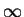
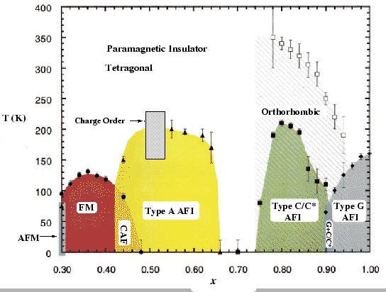
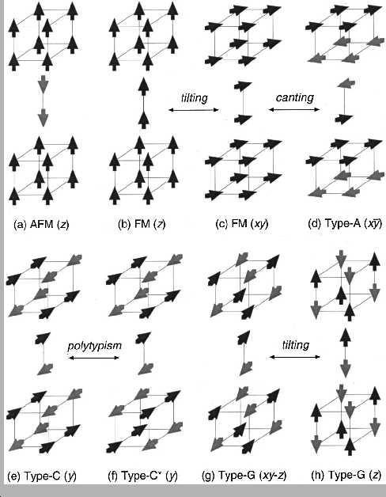

The bi-layered manganite La2-2xSr1+2xMn2O7 is the n = 2 member of the so-called
Ruddlesden-Popper series
An+1MnnO3n+1, while the ``cubic''
compound LaMnO3 is the n = 
end member. The crystal structure
of the bi-layered manganite is shown in Fig. 4.1.
Figure:
Crystal structure of the bi-layered manganite La2-2xSr1+2xMn2O7. It
consists of double layers of cornered shared MnO6 octahedra,
which are separated by one rock-salt layer of (La,Sr)-O.
|
|
This system appears to be a prospective candidate for future
technological application by showing a large colossal
magneto-resistance (CMR) effect [146], and has been widely
studied [147]. This compound consists of double layers
of corner shared MnO6 octahedra (perovskite structure type)
separated by one rock-salt layer of (La,Sr)-O. Common to many
transition-metal oxides with perovskite-related structures, the
interplay between spin, charge, and lattice degrees of freedom is of
critical importance [148]. Their delicate interactions
result in a rich and interesting, but somewhat poorly understood,
phase diagram [149,150]. The bi-layered manganite
system La2-2xSr1+2xMn2O7 shows behavior qualitatively similar to the cubic CMR
manganites and is particularly interesting to study because of the
extra factor of its reduced dimensionality. This material is also
thought to be a good candidate for applications because its low
dimensionality increases the ferromagnetic critical fluctuations close
to the paramagnetic-ferromagnetic transition that are important for
the CMR phenomenon. The reduced dimensionality obtained by
constraining the lattice degree of freedom in this bi-layered system
also facilitates the investigation of strong correlations between
electron-lattice coupling and magnetic properties, proving it to be
one of the most interesting CMR manganites [147].
The crystallographic structural and magnetic phase diagram of La2-2xSr1+2xMn2O7 is shown in Fig. 4.2. The tetragonal unit cell with
space group I4/mmm is found in all Sr doping levels, except between
x = 0.76 and x = 0.94 where the tetragonal and orthorhombic (space
group I/mmm) structural phases coexist. The most heavily studied
region is between x = 0.30 and 0.42, where the important CMR
phenomenon and the temperature driven Insulator-Metal (IM) transition
are observed [146]. The pioneering work of Moritomo
et al. [146] discovered a Curie temperature of 126 K for
this bi-layered compound at x = 0.40. The observed magneto-resistance
(MR) ratio at the Curie temperature reached as high as 200% under 0.3
Telsa magnetic field, significantly higher than in the equivalent 3D
Sr-based compound. The large MR effect was also reported for the
x = 0.3 compound [151]. Ling et al. [150] have
used temperature dependent neutron powder diffraction to
systematically map out the magnetic and structure phase diagram in
wide Sr-doping range of
0.3  x 1.0, which serves as the
basis to the more modern version shown in
Fig. 4.2. While the paramagnetic state appears at
high temperatures at all doping levels, the ground states of this
bi-layered compound show very interesting magnetic
structures. Fig. 4.3 shows the schematic diagrams
of the magnetic phases. The magnetic coupling between the double
layers of MnO6 octahedra (inter-layer) is significantly weaker than
intra-layer, giving quasi-2D magnetic interactions. We will get into
more details of the different structural and magnetic phases in the
regions of interest in the sections followed. Please refer to
Ref. [150] for others. Most studies have focused on the
Mn3+ rich portion (x < 0.5) of the La2-2xSr1+2xMn2O7 phase diagram,
particularly because of the observed CMR phenomenon. However, the
phase diagram of the less studied Mn4+ rich region shows many
novel and intriguing properties, and is the subject of this chapter.
x 1.0, which serves as the
basis to the more modern version shown in
Fig. 4.2. While the paramagnetic state appears at
high temperatures at all doping levels, the ground states of this
bi-layered compound show very interesting magnetic
structures. Fig. 4.3 shows the schematic diagrams
of the magnetic phases. The magnetic coupling between the double
layers of MnO6 octahedra (inter-layer) is significantly weaker than
intra-layer, giving quasi-2D magnetic interactions. We will get into
more details of the different structural and magnetic phases in the
regions of interest in the sections followed. Please refer to
Ref. [150] for others. Most studies have focused on the
Mn3+ rich portion (x < 0.5) of the La2-2xSr1+2xMn2O7 phase diagram,
particularly because of the observed CMR phenomenon. However, the
phase diagram of the less studied Mn4+ rich region shows many
novel and intriguing properties, and is the subject of this chapter.
Figure:
Magnetic and crystallographic phase diagram of La2-2xSr1+2xMn2O7. Solid
data points represent magnetic transitions determined from neutron
powder-diffraction data (antiferromagnetic Neel temperature TN,
ferromagnetic Curie temperature TC, charge-ordering temperature
TCO , and orbital ordering temperature TO). Open data
points represent crystallographic transitions. Lines are guides to
the eye.
|

|
Figure:
Schematic illustrations of magnetic structures of La2-2xSr1+2xMn2O7,
arrows representing spin orientations on Mn sites: (a) AFM, (b) FM
at x = 0.32, (c) FM at x = 0.40, (d) type-A AFI, (e) type-C
AFI, (f) type-C* AFI, (g) type-G AFI at x = 0.92, and (h)
type-G AFI at x = 1.00. Taken from
Ref. [150].
|

|
Xiangyun Qiu
2005-02-18